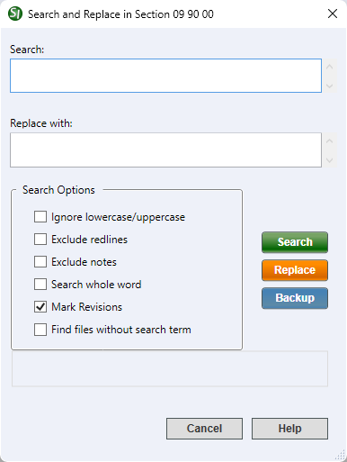

This command can also be executed from the SpecsIntact Explorer's File menu, Right-click menu, or by using the keyboard shortcut Ctrl+F.
The Search and Replace command is a powerful feature that helps you efficiently manage and refine content across the selected Sections. You can quickly find specific text and automatically replace it, saving significant time when making widespread changes in your Sections.
Global replacement of text, excluding tag elements, is supported by simply entering your new text into the Replace with field. If you leave Replace with empty and click Replace, all instances of the text specified in the Search field will be removed.
When searching for tagsSpecsIntact relies on tags to control content, and formatting, automate processes, and generate reports. These special markers, like <SEC> and </SEC>, define elements and attributes within the specifications. Some tags, like <Page />, function independently. In essence, tags are the building blocks of SpecsIntact documents, enter the tag in ALL CAPS, excluding the closing angle bracket. For example, if you were searching for Reference Identifiers (RID), you would enter <RID and would not select the Ignore lowercase/uppercase option. If you were searching for Tailoring Options (TAI), you would enter <TAI (excluding the closing angle bracket).
SpecsIntact temporarily stores your Search and Replace results in a dedicated Result Files folder within your project. Remember that this folder is only accessible until you close SpecsIntact, and a new Search and Replace operation will always overwrite the previous results. You can also perform a secondary search directly on the Result Files folder. When doing this, remember to select the Result Files folder itself, not the Sections, to ensure your search targets the correct content.
Within the Result Files folder, you can perform the standard functions like drag-and drop, copy and paste, or open the Section for editing or printing.
 After you have completed your search, you have the option to Export the Search Results List.
After you have completed your search, you have the option to Export the Search Results List.
 Do not delete the files from the Result Files folder. They are your working Section (.sec) files.
Do not delete the files from the Result Files folder. They are your working Section (.sec) files.
Before making significant changes to a Job or Master, it is always recommended to create a backup first. You can do this easily by going to the File menu > Backup and Restore.
If you want to search a Job or Master, refer to the File menu > Search and Replace topic.
 The SpecsIntact Explorer searches for both text and tags, which means its results might differ from what you get using the SI Editor's Find command. For example, if you're searching for a Tailoring Option, you'll need to make sure Tailoring Options are enabled under the View menu to see the related text in your results.
The SpecsIntact Explorer searches for both text and tags, which means its results might differ from what you get using the SI Editor's Find command. For example, if you're searching for a Tailoring Option, you'll need to make sure Tailoring Options are enabled under the View menu to see the related text in your results.

- Search - Is where you enter your search term, whether you are trying to find a specific word, phrase, or even a particular tag.
- Replace with - Is where you enter the text that will substitute your search term.
- Search Options - Provides options to refine your text searches by controlling capitalization, excluding specific content like redlines or notes, specifying whole word matches, marking revisions, and finding files without the search term.
- Ignore lowercase/uppercase - Controls how the search treats capitalization. When checked, it finds results with any capitalization (UPPERCASE, lowercase, or Mixed), even if you search with a specific case (e.g., "tile" would find "TILE", "Tile", and "tile").
- Exclude redlines - Ignores text that has been deleted and surrounded by a set of DEL tags.
- Exclude notes - Ignores any instance of the search term that appears in a Specifier Note.
- Search whole word - Searches for the exact search term. For a broader search where variations might be relevant, leave it unchecked. For instance, if you entered "excava" in the Search field, your results would contain "excavate", "excavation", and "excavating".
- Mark Revisions - Activates the Revisions function to insert ADD and DEL tags for your replace results. For example, if you select this option, enter "white" in the Search field, and "black" in the Replace with field, the text in the Sections would be tagged <DEL>white</DEL><ADD>black</ADD>. If this option is not checked, the word "black" would appear in the text where "white" had been without revisions.
- Find files without search term - Identifies Sections that do not include the text entered in the Search field. For example, if you enter "SUBMITTALS" in the Search field and select this option along with the Ignore lowercase/uppercase option, the results would display the Sections that do not contain a Submittal Article.
- Search button - Searches the selected Section(s) for the text in the Search field.
- Replace button - Executes the substitution of the search term with the text entered into the Replace with field. If the Replace with field is left empty, it will remove the search term entirely.
- Backup button - Opens the Backup and Restore window to save a copy of your project before performing the replacement operation.
Standard Windows Commands
 The Cancel button will close the window without recording any selections or changes entered.
The Cancel button will close the window without recording any selections or changes entered.
 The Help button will open the Help Topic for this window.
The Help button will open the Help Topic for this window.
How To Use This Feature
- In the SpecsIntact Explorer, select a Job or Master
- In the Contents panel, perform one of the following:
- Select a Section
- Press-and-hold the Shift key to select multiple consecutive Sections
- Press-and-hold the Ctrl key to select multiple non-consecutive Sections
- Once the Section(s) are highlighted, perform one of the following:
- Right-click and select Search and Replace Section
- Select the Sections menu and select Search and Replace
- Use the keyboard shortcut Ctrl+F
- In the Search and Replace window, enter the search term in the Search field
- Below Search Options, select the options needed for the search, then click the Search button
- After reviewing the Occurrences Found window, click OK
- After performing the initial Search, select the Results Files folder, then perform one of the following:
- Right-click and select Search and Replace Again
- Select the Sections menu and select Search and Replace
- Use the keyboard shortcut Ctrl+F
- In the Search and Replace window, enter the secondary search term in the Search field
- Below Search Options, select the options needed for the search, then click the Search button
- After reviewing the Occurrences Found window, click OK
- In the SpecsIntact Explorer, select a Job or Master
- In the Contents panel, perform one of the following:
- Select a Section
- Press-and-hold the Shift key to select multiple consecutive Sections
- Press-and-hold the Ctrl key to select multiple non-consecutive Sections
- Once the Section(s) are highlighted, perform one of the following:
- Right-click and select Search and Replace
- Select the Sections menu and select Search and Replace
- Use the keyboard shortcut Ctrl+F
- In the Search and Replace window, enter the search term in the Search field
- In the Replace with field, enter the replacement text
- Below Search Options, select the options needed for the search and replace, then click the Replace button
- After reviewing the Occurrences Found window, click OK